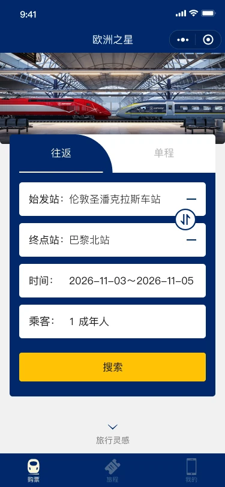
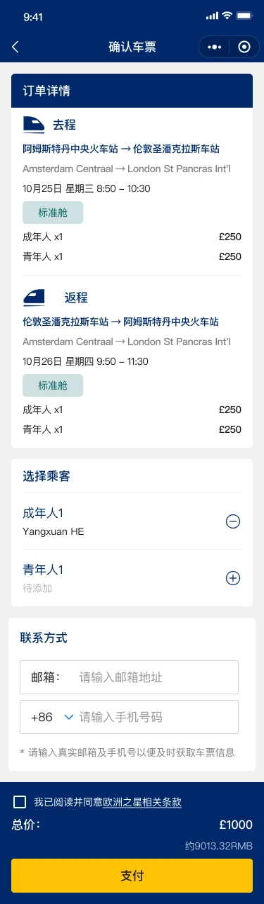
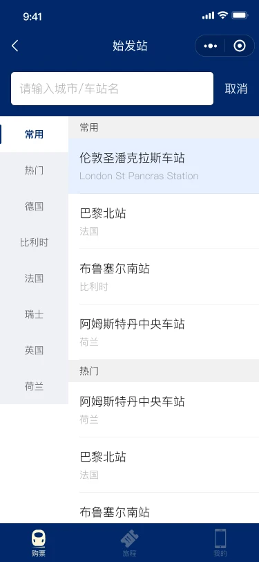
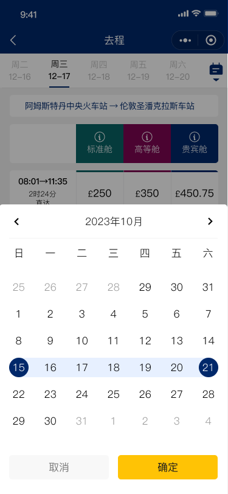

Eurostar · 微信小程序
让 Eurostar 的订票选择更清楚
从输入行程到确认车票，梳理站点、日期、乘客和票价选项，让用户能逐步确认自己的选择。
行程搜索、旅客设置、班次比较与车票确认界面。



Eurostar · 订票互动原型
在里尔换车，要留多少时间？
- 11:04伦敦圣潘克拉斯Eurostar
- 13:26里尔欧洲站
- 衔接时间 35 分钟
- 14:01里尔欧洲站SNCF
- 15:11马恩拉瓦莱－谢西
示例班次
在里尔换车
向上滑动班次列表，出发站和到达站会固定在顶部。展开第一班车，试着选较晚的接续列车，再收起比较抵达时间。
设计取舍
列表先回答「几点到、要花多少钱」。换乘展开在同一行，第一段车程留在原处；改选接续班次时，同步更新等候时间与整程抵达时间。
如何走查
走查时先选 14:31 的接续班次，再收起详情。核对抵达时间是否同步变成 15:41、再展开是否保留原选择，以及向上滑动后能否说出正在比较哪段路线。
在 IT Consultis，我参与订票旅程梳理、竞品比较与改版建议。四项升级沿着旅客实际做决定的顺序展开。
默认值
让回访旅客从上次行程开始
原流程每次搜寻都要重填。我建议把最近使用的出发站和到达站与乘客带入搜寻页，日期预填今天或明天。第一次购票时由旅客选站，每项默认都可修改。
人数默认只省去重填。若改为青年单独乘车，当下才显示年龄要求与确认项。
选择车站
从认得的城市，找到正确的车站
原本的字母侧栏难以解释分组规则，旅客也未必知道车站的拼写。改版建议以国家、城市组织相关车站，保留搜寻入口，移除无关选项。
在中文站名旁保留英文名，让旅客能拿同一组文字核对实体指标与车票。

比较车票
滑到下一班，仍知道正在比较哪段行程
列表上滑时将出发站和到达站固定在顶部，按班次并列时间与各舱等票价。原流程的车次识别信息不足；建议补足班次信息，余票少于 30 席时才显示数量。
在同一行展开两段列车，让旅客按自己的步调选接续时间。范例中保留伦敦出发的第一段，选晚一班会同时改变在里尔的停留时间与终点抵达时间。

切换日期与时间
邻近日期用滑的，跨周行程直接开日历
原结果页只能看到固定三天。建议让顶部日期列可以横滑，点日期即可开完整日历，保留出发站和到达站继续比较其他天。
往返旅程也要容许先改去程。若新去程超过原返程，再请旅客重选返程；最后把两段车票放回确认页一起核对。

